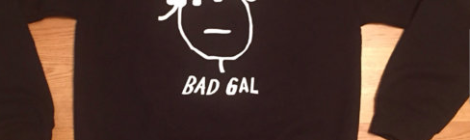

Fashion
Rihannukuh: Gift ideas for the Rihanna Lover in Your Life
Don’t make the mistake of getting the Rihanna worshipper in your life anything but a gift on this list. Y’all should know them well enough...
Hot Topic Welcomes Star Wars Fashion Collection by Her Universe
There’s one month to go until Star Wars: The Force Awakens hits theaters, and the existence of Star Wars culture has become more and more…
The Mirror Pics of Halloween 2015
Sometimes you can’t wait until you get to the party to show off your costume. Partiers took to Instagram over the weekend to flex their costumes, and...
The Best Style Moments of '60s & 70s Horror Films
The 1960s and 1970s are considered by some to be the golden years of horror films. Carefully written story lines (that don’t rely on gore)...
Disney Characters Get a Construction Cosplay Makeover
Poison apples are a thing of the past. Break into your toolbox and gather inspiration for your next cosplay with a spin on these classic...